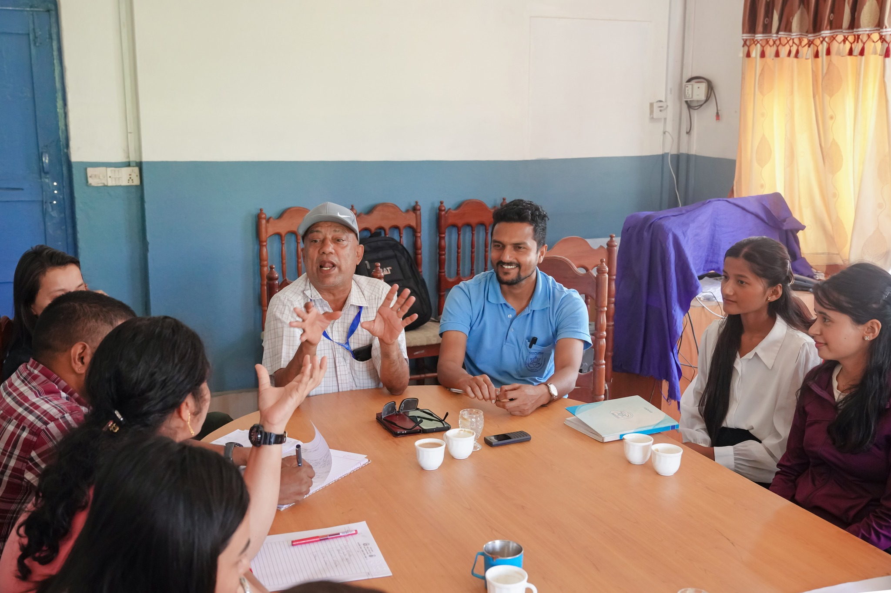

Discover Your Potential with Bidur Academy

Bidur Academy is a premier institution dedicated to providing high-quality education in technology and computer science. Our mission is to equip students with the knowledge, skills, and practical experience needed to thrive in the rapidly evolving digital landscape. We believe that education should be accessible, engaging, and relevant to real-world applications. Our experienced faculty members are committed to fostering a supportive learning environment where every student can reach their full potential and achieve their career goals in the technology sector.
Why Choose Bidur Academy?
At Bidur Academy, we understand that choosing the right educational institution is a crucial decision. We offer state-of-the-art facilities, industry-relevant curriculum, and hands-on training that prepares students for successful careers in technology. Our partnerships with leading tech companies provide students with internship opportunities and direct pathways to employment. We maintain small class sizes to ensure personalized attention and mentorship for each student. Our graduates have gone on to work at top technology companies around the world, and we take pride in their achievements and continued success in their chosen fields.

Our Commitment to Excellence
We are committed to maintaining the highest standards of academic excellence and professional development. Our comprehensive programs are designed to build strong foundations in computer science fundamentals while also incorporating the latest industry trends and technologies. Students benefit from our modern learning facilities, extensive library resources, and collaborative study spaces. Join our vibrant community of learners and take the first step toward a rewarding career in technology.
External Resources
Oxford College of Engineering and Management and explore web standards at W3C Validator.